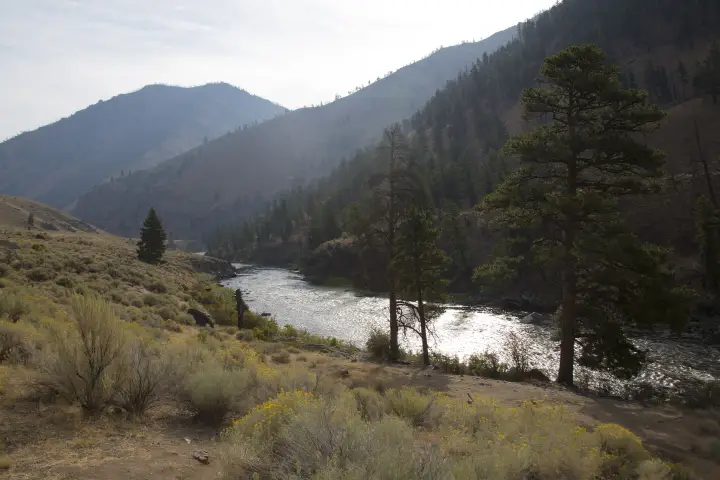
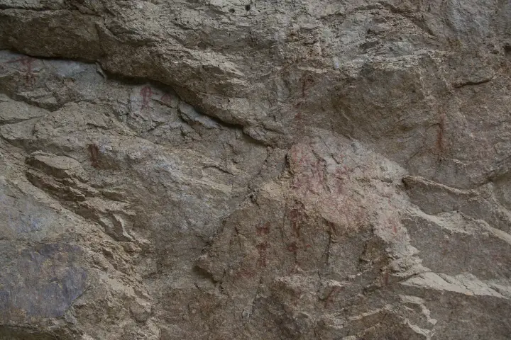
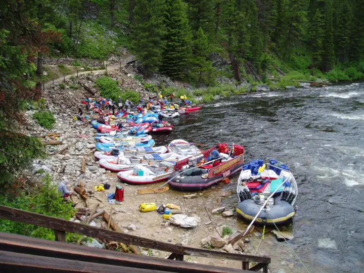

Middle Fork of the Salmon
Boundary Creek to Cache Bar · about 100 river miles- Put-in
- Boundary Creek (Indian Creek airstrip in low water)
- Take-out
- Cache Bar, on the Main below the confluence
- Length
- ~100 miles · 5–7 days
- Difficulty
- Class III–IV, IV+ at high water
- Season
- Late May–September; control season May 28–Sep 3
- Permit
- Four Rivers lottery (Recreation.gov)
- Camps
- Assigned by the Forest Service before launch
- Gauge
- USGS 13309220 at MF Lodge · text
mf salmon
mf salmon to
866-284-5181 from your inReach and this reading
comes back over satellite. No app, no account, no cell service.


The river
The Middle Fork is the trip most Western boaters would pick if they could only keep one. It starts as a small, cold, fast river at about 5,700 feet, where Bear Valley and Marsh creeks come together in lodgepole country, and ends a hundred miles later in a dry, walled-in canyon at the Main Salmon confluence, roughly 2,700 feet lower. Nothing crosses it in between: no road, no bridge, no cell tower. The whole run sits inside the Frank Church, one of the largest wilderness areas in the lower 48.

The character changes as you go. The first two days are continuous, rocky, and steep for a multiday river, with the named drops coming quickly: Velvet Falls (quiet until you are on top of it), Powerhouse, Pistol Creek, and a long run of Class III between. Below Indian Creek the river gathers its side creeks, the valley opens, and the pace becomes pool-and-drop: Tappan Falls, Haystack, and long stretches of hot-spring camps and pictograph panels. The last twenty-odd miles are Impassable Canyon, where the walls close in and the biggest water of the trip lives: Redside, Weber, Cliffside, Rubber, Hancock, Devils Tooth, and House Rocks in quick succession.
It is a fishing river as much as a whitewater river. Catch-and-release, single barbless hooks, and a cutthroat population that has never seen a hatchery truck. Hot springs come up every day or two (Trail Flat, Sunflower Flat, Loon Creek, Hospital Bar), and the Sheepeater sites and homesteads along the lower river are worth the walk.
Which gauge people actually quote
The Middle Fork Lodge gauge (USGS 13309220) sits well down the run, and that is exactly why it is the reference: it already includes the creeks that feed the river below Boundary Creek. The top of the run above Indian Creek is the shallow part, so a comfortable number here can still mean a bony, scrapey first day if you launched high.
This is a free-flowing snowmelt river with no dam upstream. It drops through the season rather than cycling daily, and it answers to weather: a warm spell or a rain event can move it hard in a day. The Forest Service still posts a staff-gauge reading in feet at Boundary Creek; boaters trade both numbers, and the two do not convert cleanly, so know which one someone is quoting.
Reading the number
Roughly 2,000–7,000 cfs at the Lodge covers the range most private trips plan around. Low water means more rock-dodging up top and a real possibility of dragging boats above Indian Creek; by late July many groups fly their gear into Indian Creek precisely to skip the thin upper section. High water (early June in a big snow year) turns the whole run pushy and fast, with fewer eddies, a much shorter float, and camps under water. The Boundary Creek staff-gauge reading is what the ranger works from at the launch, and it decides how serious that talk gets.
The gauge is information, not permission. It cannot tell you about wood in the channel, what a side creek did last night, or what your group is ready for. Scout, and make the call on the water.
Getting there and the shuttle
To the put-in
Boundary Creek is reached from Stanley: north on Highway 21 toward Lowman, then the Bear Valley and Boundary Creek roads for about forty miles of graded gravel to the launch. Allow two hours from Stanley. The road is usually clear of snow by the end of May, but a late spring can push that; the Middle Fork Ranger District in Challis knows. Stanley is the last town with a store, a gas pump, and a cell signal. There is a Forest Service campground at Boundary Creek, and most groups camp there the night before their launch day.

The take-out
Cache Bar is on the Main Salmon a few miles below the confluence, reached by the Salmon River Road west of North Fork (Highway 93, 20 miles north of Salmon). It is an hour-plus of gravel from North Fork, which is also the last fuel on that side. The same road carries on to Corn Creek, so it is busy with Main Salmon traffic on a summer afternoon.
The shuttle
Boundary Creek to Cache Bar is about 220 road miles and six hours, half of it on gravel, by way of Stanley, Challis, Salmon, and North Fork. Almost nobody runs it themselves. The drivers below do it all summer; book early in the season, tell them your launch date and your ramp, and leave a vehicle in sound shape with good tires and a full tank.
- Salmon River Shuttles
- Salmon, Idaho. The long-standing operator on both the Middle Fork and the Main.
- Central Idaho River Shuttles
- Salmon-based; runs Middle Fork, Main, Lower, and Selway routes.
- BBC Shuttles
- Middle Fork and Main Salmon shuttles out of the Salmon valley.
- All Rivers Shuttle
- Based in White Bird; also covers the Lower Salmon and Snake.
Permits and season
The Middle Fork is one of the Four Rivers on the Recreation.gov lottery, with the Main Salmon, the Selway, and the Snake through Hells Canyon. Applications open December 1 and close January 31; results post around February 15. The control season, when a lottery permit is required, runs May 28 through September 3. Cancelled launches go back on Recreation.gov through the summer and are the realistic way onto the river without a winning ticket.
Outside the control season it is self-issue, in genuinely serious conditions: high, cold water in May, and ice, snow, and short days by October. Confirm dates and rules with the Salmon-Challis National Forest (Middle Fork Ranger District, Challis). This page tracks water, not paperwork.
Camps
Camps on the Middle Fork are assigned, not first-come. For launches in the heart of the season the Forest Service emails the permit holder a camp request form about two weeks before the launch date; you rank your choices, they build your itinerary, and you get it back before you drive in. Earlier and later launches are still assigned at the Boundary Creek check-in. Either way, the ranger's talk at the launch is where you find out what the river is actually doing, and it is not optional.
The camps themselves range from sandbars big enough for a kitchen and thirty people to tucked-in benches above hot springs. Most groups try to split the run so the steep upper section is behind them by the second night and a hot-spring camp lands on a layover.
How the text line works out there
There is no cell service anywhere on this run, which is the whole reason this page exists. Save 866-284-5181 as a contact on your inReach (or your phone, if it does satellite texting) before you leave Stanley, and text the run name. One reply comes back over the satellite, the same way a message from home would:
That is the whole product. It costs nothing beyond whatever your device charges for a message, there is no account, and you get exactly one reply per text. The reading is what USGS reported at that timestamp, so an evening text at camp tells you what the river did all day and whether tomorrow's Impassable Canyon is going to be bigger than you planned. Details and the failure modes are on the how it works page.
Before you launch
Save the number to your phone and to your inReach before you lose service, and send yourself a test message from the driveway. Check the Main Salmon if you are continuing downstream from the confluence, or browse every run LateBoof knows.